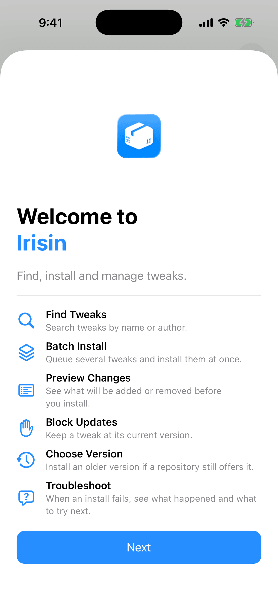
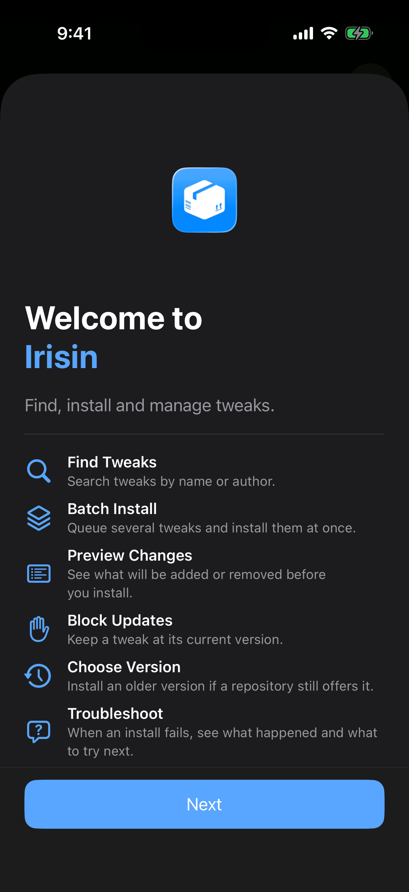
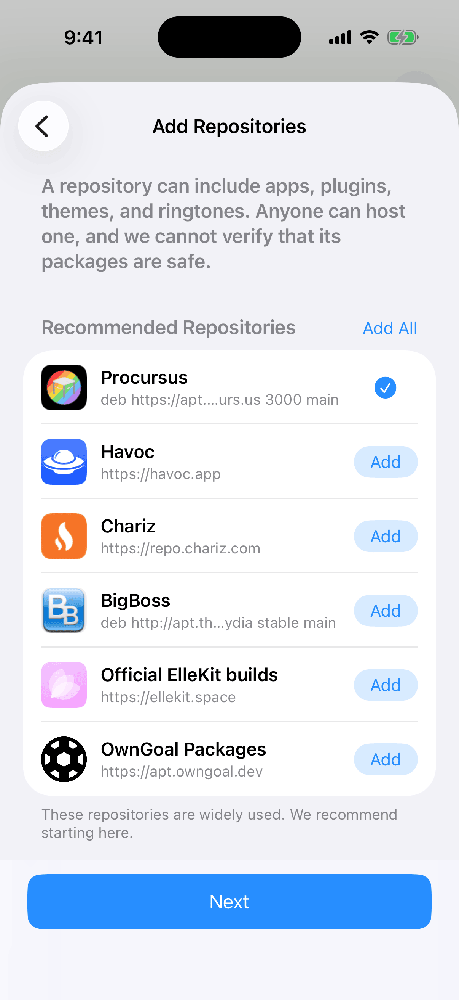
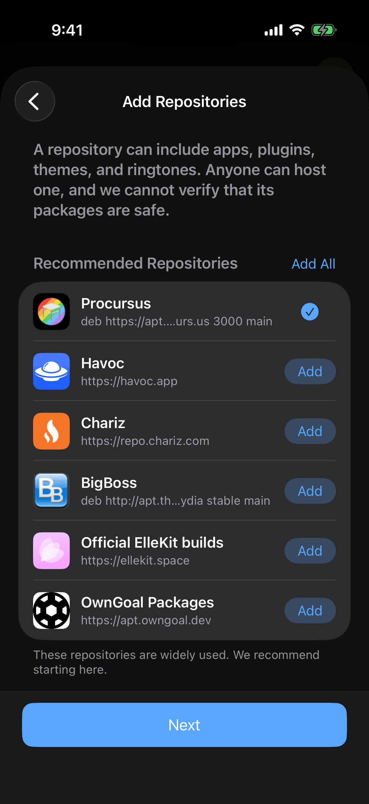
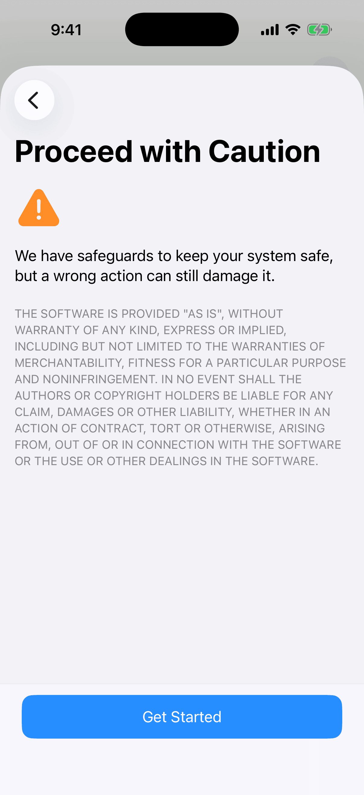
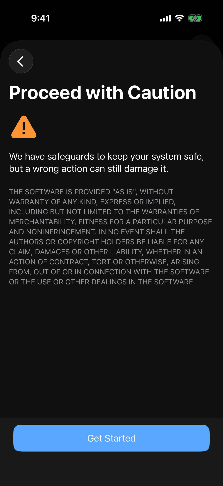

This chapter gets Irisin onto your device and ready to use. You install it from the right package for your bootstrap, add your first repositories on the Welcome page, and learn how Irisin updates itself. If Irisin already stops at an alert when it opens, go straight to If It Says Unsupported Architecture.
Choose Your Package
Irisin comes as two packages. They hold the same app and differ only in the bootstrap they are built for. The bootstrap is the layout your custom firmware uses for its files, and Irisin supports two: roothide and rootless. You pick by bootstrap, not by device. The model of your iPhone or iPad does not matter.
- On roothide, install the package whose architecture is
iphoneos-arm64e. - On rootless, install the package whose architecture is
iphoneos-arm64. A rootless bootstrap keeps its files under/var/jb(Dopamine and palera1n in rootless mode are examples).
The two architecture names look like processor names. Here they name the bootstrap, and they are the same two names that Settings and Irisin's alerts show.
_iphoneos-arm64e.deb
_iphoneos-arm64.deb
The other file installs without error, and Irisin stops at Unsupported Architecture when it opens.
Both packages carry the same identifier, wiki.qaq.irisin, so only one of them can be installed at a time, and installing the wrong one replaces the right one. If you install Irisin from another package manager, read the description before you confirm. It says either "Modern package manager for roothide custom firmware" or "Modern package manager for rootless custom firmware".
Irisin requires iOS or iPadOS 16.0 or later. On an older system the package does not install.
You get both packages from the Releases page of Irisin's GitHub repository, https://github.com/Lakr233/Irisin/releases. Each file is named wiki.qaq.irisin_<version>_<architecture>.deb, so the architecture is in the file's name. Download the file with the ending shown for your bootstrap in the figure above.
Install the package, not the app alone. A copy of Irisin that reached your device without its package, for example by sideloading, opens and browses, but installs nothing. In that state the last line at the bottom of Settings reads You can browse, but not install. Install the Irisin package. For the fix, see Browsing Only.
Do not convert Irisin with a patcher to make one package fit the other bootstrap. That includes Irisin's own compatibility mode, which refuses Irisin by name. A converted copy of Irisin still expects the bootstrap it was built for, so it stops at Unsupported Architecture. See What Is Refused.
The Welcome Page
The Welcome page appears the first time Irisin opens, as a sheet over the main interface. It has three pages. You cannot swipe it away; use its buttons to move through it. If you opened Irisin from a link or a file, the Welcome page is skipped and appears the next time you open Irisin instead.
Page One
The first page shows Irisin's icon, the title Welcome to Irisin, and the line Find, install and manage tweaks. Below them are eight features, each with a symbol, a name, and a sentence about what it does. The Welcome page says "tweaks"; the rest of Irisin and this manual say "packages" for the same thing. Tap Next at the bottom to go on.


Add Repositories
A repository is an address that offers packages. The second page, Add Repositories, opens with a note you should read once: A repository can include apps, plugins, themes, and ringtones. Anyone can host one, and we cannot verify that its packages are safe.
The list under Recommended Repositories depends on your bootstrap. Each bootstrap gets six repositories, and the two lists are never mixed.
- On both: Havoc (
https://havoc.app), Chariz (https://repo.chariz.com), BigBoss, and OwnGoal Studio's own repository,https://apt.owngoal.dev. - On roothide only:
https://roothide.github.ioand roothide's build of Procursus. - On rootless only: Procursus (
https://apt.procurs.us) and ElleKit (https://ellekit.space).
To add from the list:
- Wait a moment. Each row starts with a spinner and the repository's host name, then shows the repository's own name and icon once Irisin reaches it.
- Tap Add on a row to add that repository, or tap Add All in the list's header to add every repository you do not have yet.
- Check the row. Its button becomes a checkmark, which means the repository is added. When every row has a checkmark, Add All disappears from the header.
- Tap Next.


A row that reads Repository Unreachable in place of a name means the repository did not answer. You can still add it and refresh it later.
The last row, Add More…, opens the normal add sheet for a repository that is not on the list, without leaving the Welcome page. See Add a Repository. Next does not wait for you to add anything; you can add repositories later in the app.
Proceed with Caution
The last page, Proceed with Caution, carries one warning under a triangle: We have safeguards to keep your system safe, but a wrong action can still damage it. Below it is the warranty text of the MIT License, which stays in English in every language. Tap Get Started to close the Welcome page and begin.


See It Again
Once you tap Get Started, the Welcome page does not come back by itself. You can open it whenever you want to add a recommended repository you skipped.
- On Dashboard, tap the gear to open Settings.
- Tap the … button at the top right, then Welcome Page.
It starts at page one again. On the second page, the repositories you already have show a checkmark in place of Add.
If It Says Unsupported Architecture
You open Irisin and, in place of its pages, you get a blank screen. One small, muted line just below the middle reads Unsupported Architecture, and an alert with the same title appears over it. The interface never opens, and Irisin does not run in a limited mode.
It means this copy of Irisin was built for one bootstrap and your device uses the other. The message names both: This copy of Irisin is built for iphoneos-arm64e, but your bootstrap uses iphoneos-arm64. Install the matching official Irisin package. Do not install Irisin using a patcher. On the opposite mistake the two names swap places. Both are architecture names, not files to download: the first is the architecture you installed, and the second is the one you need. Match the second name against the list in Choose Your Package.
Close is the only button, and it closes Irisin. Until you install the matching package, nothing else works: an irisin:// link or a file you open in Irisin does nothing.
To fix it:
- Read the second architecture in the message, the one after "your bootstrap uses".
- Get the Irisin package with that architecture in its file's name.
- Install it over the wrong one, from whichever package manager or file manager you used the first time. Both packages share one identifier, so the right one replaces the wrong one.
- Open Irisin again.
Converting the wrong package with a patcher does not make it work. Irisin checks the bootstrap it was built for every time it opens, and a converted copy still fails that check.
Updating Irisin
Irisin updates like any other package, from the repository you installed it from. OwnGoal Studio's repository, https://apt.owngoal.dev, is on the Welcome page's list for both bootstraps. A new version appears on the Updates page with everything else, and Update All includes it. There is no separate update row in Settings. For the page itself, see Updates.
When Irisin is among the changes in the queue, the Queue page tells you so before you start: Irisin will restart when this finishes.
- Tap Execute. The operation page runs as it does for any package, and its title ends on Completed.
- Tap the checkmark at the top right.
- An alert titled Updating App… appears, with the message Preparing the app update. The app will exit when it finishes.
- Irisin closes. Open it again from the Home Screen.
After an update of Irisin itself, the … menu on the operation page offers View Full Log only. Rebuild Icons and Reload Home Screen, which follow other installs, are not there, because Irisin is about to close.
Update only with the package for your bootstrap. The other one installs without error, and the next time Irisin opens it stops at Unsupported Architecture. If that happens, follow If It Says Unsupported Architecture.